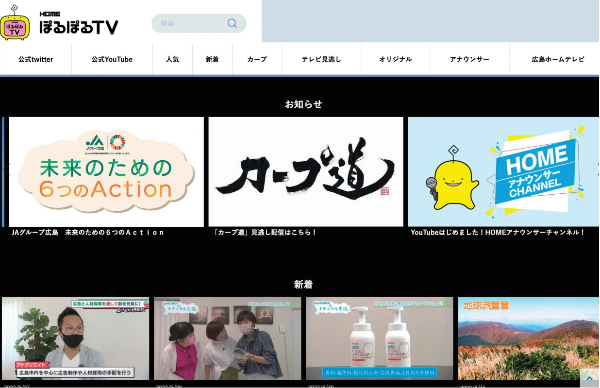
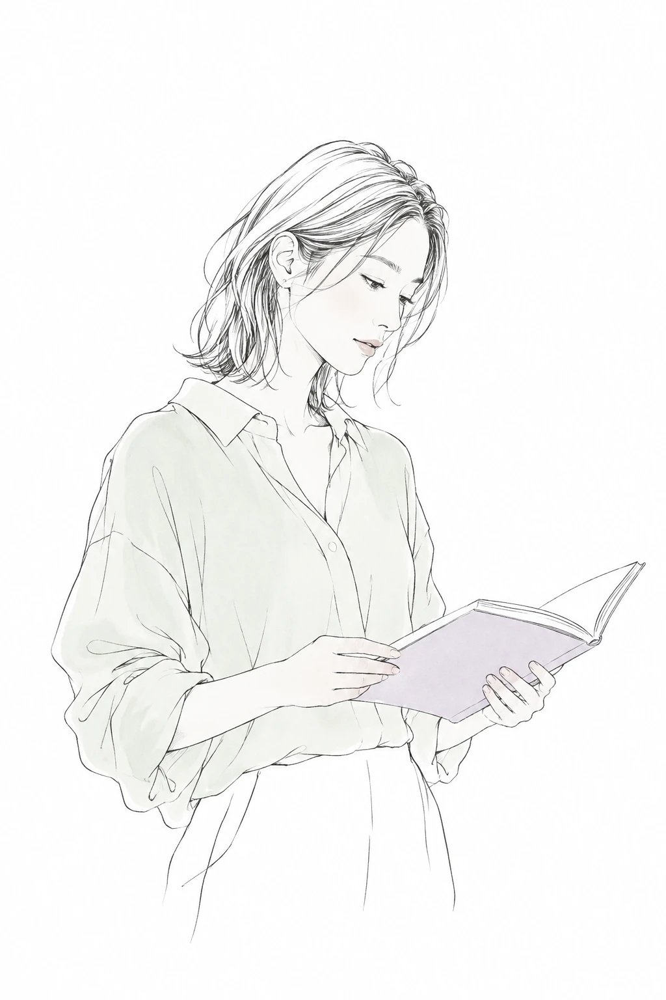
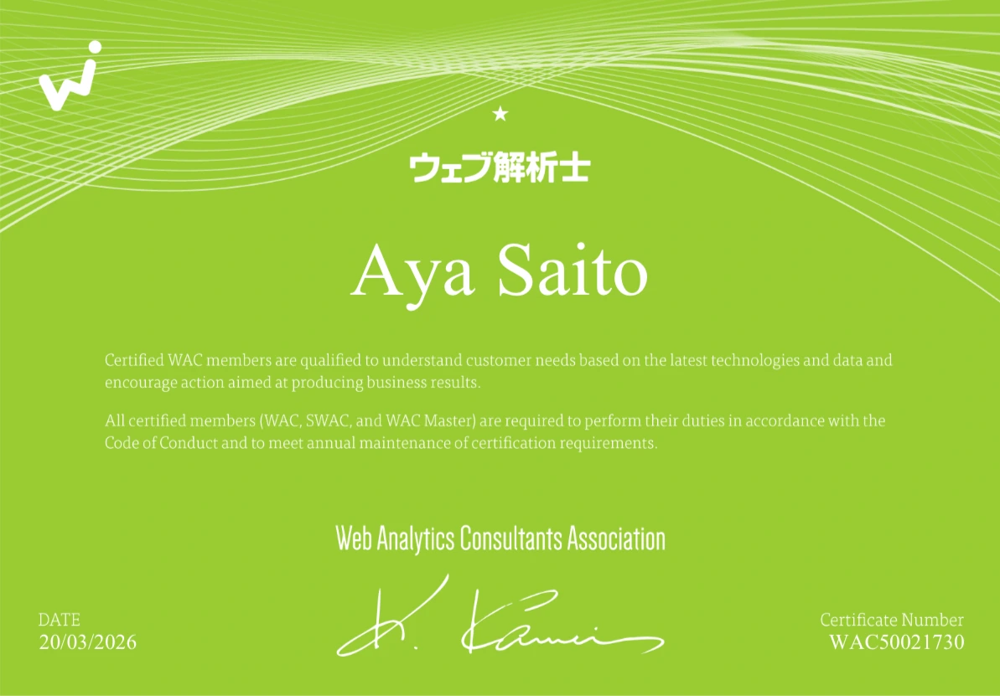

Webサイト
斎藤 彩 / 株式会社ReachWeb · Graphic · Communication
2026 / 株式会社Reach
Selected worksReachでの仕事
伝える順序を考えるところから
デザインと運用の支援まで
会社紹介のチラシやスライド、ロゴ、Webサイトを制作しています。ヒアリングと企画整理にも参加し、相手に何を伝えるかを一緒に考えながら形にしています。
01 / DESIGN
伝える内容を整理して制作
会社紹介のチラシ・採用資料・営業資料、ロゴ・名刺、Web改修と記事サムネイルを担当
02 / DIRECTION SUPPORT
企画と調整にも参加
出展先の調査や要件ヒアリング、構成の検討、レビュー後の調整と入稿データ制作まで対応
03 / LEARNING SUPPORT
学ぶ人と働く人を支援
エンジニアカリキュラムの受講検証、改善点の記録、オンボーディングフローの整理をサポート
LEARNING & ONBOARDING
Behind the workReachでの制作支援・オンボーディング
オンボーディング支援で用いたAIによる検討用ビジュアル
学ぶ人と、入社する人の視点から
Reachではオンボーディングフローの整理に加え、エンジニアカリキュラムの制作補助にも参加しています。Python・開発環境・Gitの研修を実際に受講し、迷いやすい手順や不足する説明を記録して改善につなげています。
あわせて担当した仕事
- クラコミ｜紹介スライド
- 2026年5月・9月／10分の紹介に向けた構成とデザイン、活動の背景と展望をつなぐストーリーの検討
- enginepot｜記事サムネイル
- 2026年／記事のコピーと写真の見せ方、Figmaでの文字組みとレビュー後の調整 公開サイト ↗
- VizMate｜Web・営業資料
- 2026年・改修中／ヒアリングに基づく情報整理とデザイン 現在の公開サイト ↗
- 提案資料・イベント告知・名刺
- 2026年／採用施策の図解とイラスト、告知チラシの情報整理、名刺裏面の改修
EARLIER PROJECTS
Archiveこれまでの制作
PERSONAL PROJECTS
Personalその他・個人制作
TOOLS & LEARNING
Skills制作を支えるツールと学び
デザイン
Web・ロゴ・紙面・スライドなど
目的に合わせた情報整理と視覚表現
Web制作・運用
WebサイトやECの制作・更新
公開後の運用を支える資料づくり
進行管理・制作支援
スケジュール管理と関係者との調整
ヒアリング・構成検討・改善の支援
使用ツール
デザイン
- Photoshop
- Illustrator
- Adobe XD
- Figma
- DesignSTUDIO（STUDIO）
Web・ECの制作と運用
- HTML
- CSS
- JavaScript
- jQuery
- WordPress
- Movable Type
- EC-CUBE
- MakeShop
- 楽天
- Amazon
- ヤフーショッピング
プロジェクト管理
- Slack
- Backlog
- Googleスプレッドシート
- PowerPoint
AIの活用
- ChatGPT
- Codex
- Gemini
- Google AI STUDIO

ウェブ解析士認定試験 合格
2026年3月20日／分析と改善への理解を深めるために学習
ABOUT / AYA SAITO
ものづくりの原点
斎藤 彩
Web・グラフィックデザイナー
株式会社Reach / 2026年3月入社
「人を笑顔にするものを自分の手で生み出したい」
出典：株式会社Reach メンバーインタビュー #10（2026年5月1日）
雑貨店で働いていた頃、遊園地のように楽しいお店のWebサイトに出会ったことが制作の道へ進むきっかけでした。独学で学び始め、WebやECサイトから番組コンテンツ、紙媒体へと仕事の幅を広げてきました。
ディレクションやカスタマーサポートを経験する中で大切にしてきたのは、相手の話を聞き、予算や時間の中でできることを考える姿勢です。現在はReachで企画の整理から制作・改善まで携わり、エンジニアリングやAIの活用にも取り組んでいます。
Wantedlyでプロフィール・インタビューを見る ↗EXPERIENCE
これまでの経験
- 2026.03—現在
株式会社Reach
Web・採用LP・資料・印刷物の制作に加え、企画整理やヒアリングにも参加。カリキュラムの制作補助とオンボーディングの支援を担当しています。
- 2022.11 入社
株式会社helios
カスタマーサポートを主業務として顧客対応、ホームページの代理更新、遠隔でのメール設定を担当。並行してホームページ制作にも従事しました。
- 2021.10—2022.07
株式会社Skyward
EC関連の制作に携わり、食品の販促バナーやキャンペーン用のビジュアルを制作しました。
- 2021.07—2021.09
株式会社リベルテ
プロジェクトマネージャーとして主にスケジュール管理を担当し、Webディレクションに従事しました。
- 2013.12—2021.03
ホームテレビ映像株式会社
番組やイベントと連動するWebコンテンツを制作・運営。ポスターやノベルティのデザイン、動画・ライブ配信サイトとアプリの立ち上げにも参加しました。
- 2011.04—2013.07
株式会社ウィニーズ・ホールディングス
自社サイトとECサイトの更新、商品ページやキャンペーンのデザインを担当。販売戦略の企画会議にも参加し、社内外の紙資料や名刺を制作しました。
- 2009.03—2011.03
ネットマーケットジャパンコーポレーション株式会社
顧客サイトの代理更新、デザインリニューアル、CMS構築に従事。リサーチからワイヤーフレーム作成、デザインガイドラインの共有まで担当しました。
- 2005.04—2009.03
株式会社ロフト
生活雑貨の販売に従事。店舗のWebサイトとの出会いをきっかけに制作を学び始めました。
CONTACT
Contact
株式会社Reachに在籍しています。
制作実績や担当業務についてのお問い合わせはこちらへ。